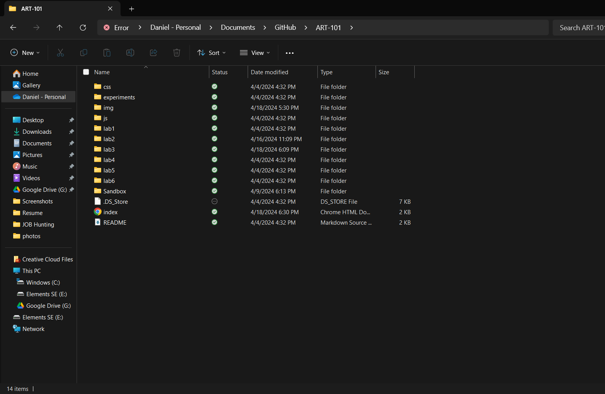
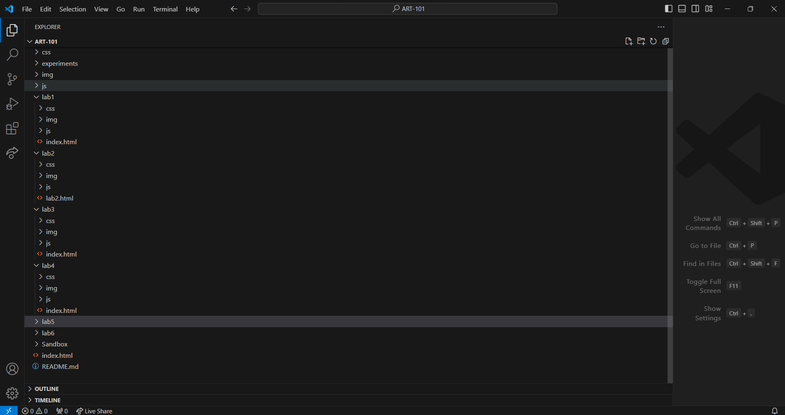

Lab 3 - File Structure and File Transfer
Purpose: The purpose of this lab was to further create a local file structure on my computer and add html files to each lab.
Challenge
Create a local file structure on your computer, add index.html files, and upload to the server.
Problems
I had no problems in completeing the lab.
Reflection
The assignmet was a good remidner to keep one self organized. It allowed me to look at all the folders I was making and to ensur ethath everything was in the appropiate location.
Results
This is the screenshot of the files on my computer.
This is the screenshot of them on VSC.
